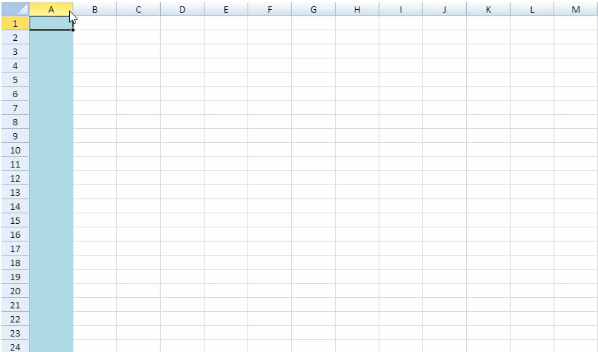

SpreadJS allows you to configure styles according to the current state of the rows and columns. You can set all the states by using the GC.Spread.Sheets.RowColumnStates enumeration.
You can use rowStateRule or columnStateRule from ConditionalFormatting.RuleType enumeration options and then add the rule to specify the state.
The row and column states are based on conditional formatting so you can also use the ConditionalFormats class methods, addRowStateRule and addColumnStateRule to add row and column states.

Note: The row and column states do not support moving or copying conditional format range.
The following table lists all the available row and column state enumeration options in GC.Spread.Sheets.RowColumnStates.
| Enumeration Option | Description |
|---|---|
| edit | When any cell is edited, this action executes the specified row or column in edit state. |
| hover | When any cell is hovered, this action executes the specified row or column in hover state. |
| active | When any cell is in focus, this action executes the specified row or column in active state |
| selected | When any cell is selected, this action executes the specified row or column in selected state. |
| updated | When any cell is updated, it locks the corresponding row or column in a protected worksheet. |
| inserted | When any cell is inserted, it locks the corresponding row in a protected worksheet. |
| dirty |
When any cell state is set as dirty, this action executes the specified row or column in dirty state. This makes the row or column to easily track any change in the sheet data. The dirty row state includes the inserted row state. But the dirty column state doesn't include the inserted column. |
| invalid | When any cell is set as invalid, this action executes the specified row or column in invalid state. |
If you set multiple states in same direction and same range, the applied state style will have a priority if the corresponding rows or columns meet different states at the same time.
The state priority is followed in the below order:
Edit > Hover > Active > Selected > Updated > Inserted > Dirty > Invalid.
The following code sample shows how to add row and column states using both ConditionalFormats class methods and by adding a new state rule.
| JavaScript |
Copy Code
|
|---|---|
$(document).ready(function () { // Set the number of sheets to 3. var spread = new GC.Spread.Sheets.Workbook(document.getElementById("ss"), { sheetCount: 3 }); var sheet = spread.getSheet(0); // Using a new state rule var cfs = sheet.conditionalFormats; var ruleType = GC.Spread.Sheets.ConditionalFormatting.RuleType.rowStateRule; var hoverstate = GC.Spread.Sheets.RowColumnStates.hover; var style = new GC.Spread.Sheets.Style("yellow"); var ranges = [new GC.Spread.Sheets.Range(-1, -1, -1, -1)]; var rule = new GC.Spread.Sheets.ConditionalFormatting.StateRule(ruleType, hoverstate, style, ranges); cfs.addRule(rule); // Using ConditionalFormats class methods var cfs1 = sheet.conditionalFormats; var style1 = new GC.Spread.Sheets.Style("lightblue"); var columnRange = [new GC.Spread.Sheets.Range(-1, -1, -1, -1)]; cfs1.addColumnStateRule(GC.Spread.Sheets.RowColumnStates.selected, style1, columnRange); // adding column state var cfs2 = sheet.conditionalFormats; var style2 = new GC.Spread.Sheets.Style("pink"); var rowRange2 = [new GC.Spread.Sheets.Range(-1, -1, -1, -1)]; cfs2.addRowStateRule(GC.Spread.Sheets.RowColumnStates.dirty, style2, rowRange2); // adding row state }); |
|